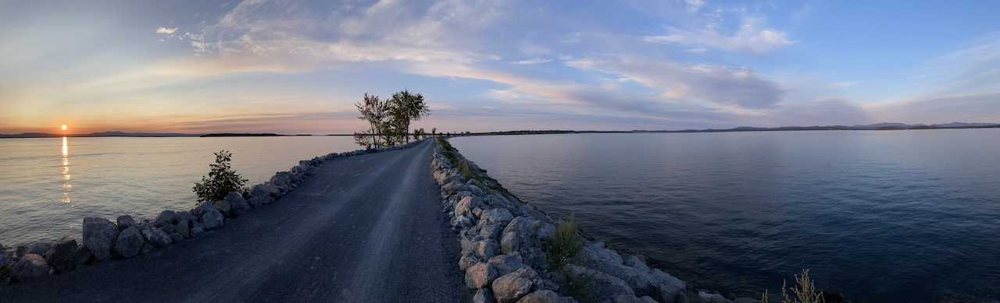
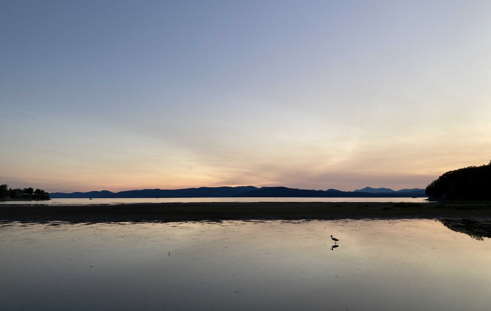
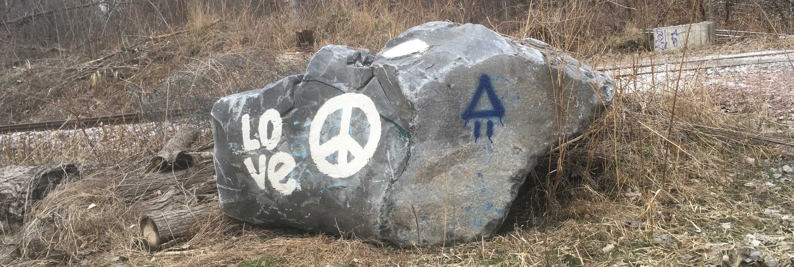
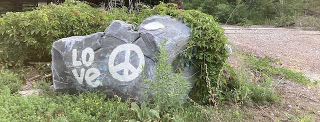
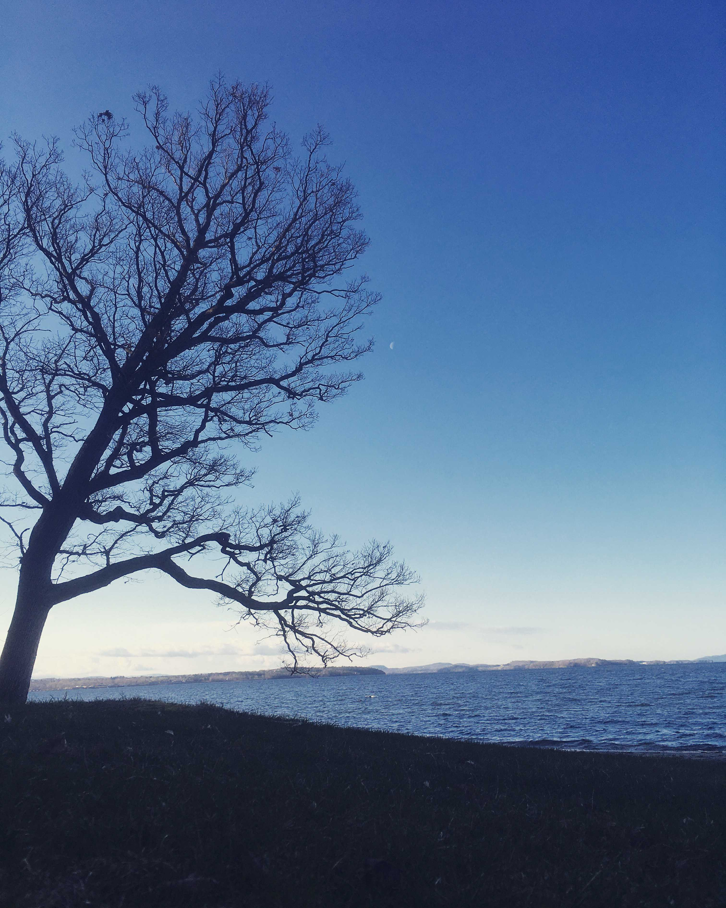
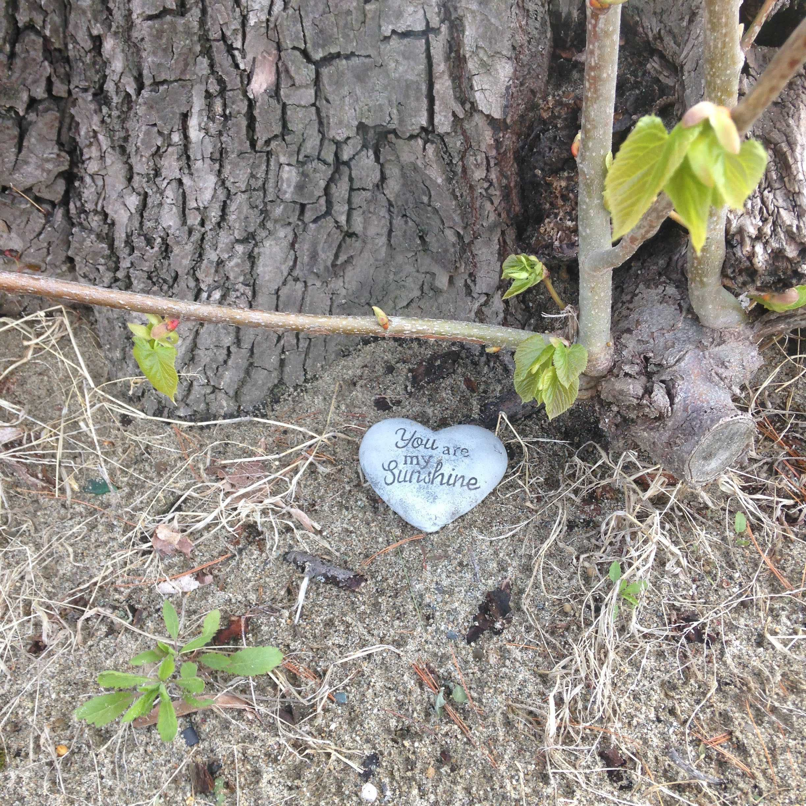
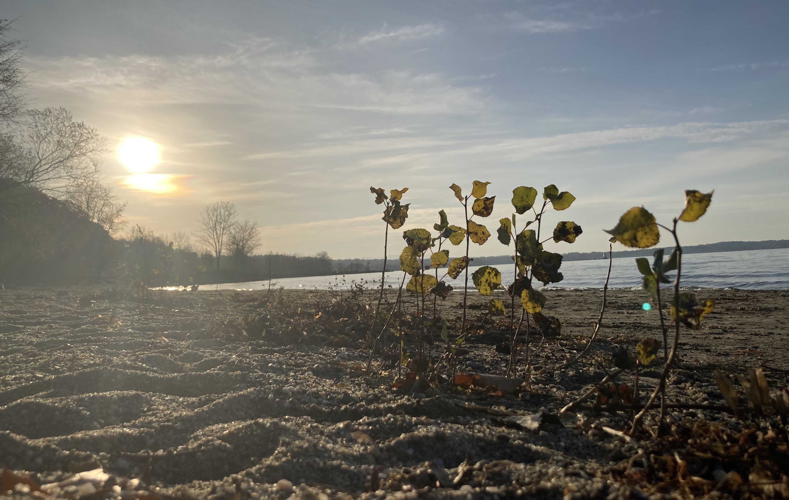

Seeds: Looking back on 2020

When I think about the past year, I see a child clad in the slowness of seasons, walking the same path by the same lake in the same woods over and over again, searching for something solid to hang onto, comfort in the familiarity of dirt roads, dressed trees, and footsteps perhaps, certainly meaning, in the face of a reality that has just turned dream-like. Sometimes he stops to skip rocks across the water, hoping they will carry his worries with them. He doesn’t know where he’s going, only that he must keep going.
This year has been one of the most challenging to date, for obvious reasons. What wasn’t obvious was the shape that my struggles would take and the arcs created and traversed in attempting to resolve them. Given my optimistic nature and proclivity for solitary endeavors, I initially treated news of the pandemic as an opportunity of sorts on the personal front; the impending solitude would serve as the bedrock of my creative muse, the social restrictions a chance to explore and deepen the relationship I had with myself.
This buoyed optimism lasted for a month, tops. What I didn’t anticipate was the necessary reconfiguration of what would give me meaning in the longer days to come when the world finally shut itself down. Plans to visit family for the holidays, hiking the Tour du Mont Blanc prior to starting graduate school, seeing and sending my penpal Alyona off before she returned to Russia; everything had to be cancelled. The degradation of meaning became most visceral in the weeks my lab began transitioning to remote work after our research was put on pause. The emptied office rooms, the reassuring goodbyes shrouding the uncertainty of future reunion, computer screens left vacant in the dark. The architecture that once held up my life was collapsing, and nothing threatens our existence more than the loss of meaning and the emptiness of boredom.
With a lack of replacements for my usual affairs and the things I looked forward to, I resorted to pastime comforts: video games – League of Legends in particular. But it wasn’t as fun as it used to be. It certainly didn’t provide the same meaning that it once did when I was a decent player trying to make it big in the then emerging e-sports scene. I then started slacklining, practiced guitar more seriously, wrote many poems, and began rollerblading again (after 16-17 years?). Put another way, I was trying to do something productive, but it felt contrived at times, like I was distracting myself from the truth that I was flailing in deep waters, with the shoreline nowhere near in sight.

I also didn’t anticipate how lonely some days would be. Part of this was due to the fact that I was becoming a stranger to myself in that I was adopting new habits, hobbies, and ways of thinking about and interacting with the world, which is always, at least initially, a disciplined pursuit rather than a natural process. Though some days were just painfully lonely too, both physically in how far I felt from people, and mentally in the implications of a civilization being forced to confront its own mortality under the knuckle of dumb politics and a ravenous coronavirus.
Many emotional conversations with friends I fell out of touch with after college soon followed. One in particular stirred me to the bone. We were close, but it had been five years since we last spoke. We reminisced about the first time we met in Applied Psychology, about the meditation program we both participated in later that summer, about the friendship we once had. After mentioning that I had a huge crush on her that year, she revealed that there were many things she should have but did not say to me: that she was in a physically abusive relationship, that her relationship with her family was fragmented, that she struggled with drug abuse, that she lived out of her car for a period after graduation, that suicide had nearly taken her life on multiple occasions.

We were always able to get deep about life, but never too deep, vulnerable, but never enough to be truly seen. I took her hesitation as a sign that we were to remain platonic friends, but never as a consequence of inner turmoil. Things were better now she said. She’s in a supportive relationship and is pursuing a nursing degree. But she had never told her story to anyone before, not even to her current partner. I was the first to hold it, and this time the tears came.
Catching tears. It certainly gives me meaning.

If I’ve learned anything in the midst of this year, it’s that we need each other more than we can ever realize, at all scales. Us students in the complex systems program are trained to quantify, model, and interrogate the implications of this idea – the interconnected nature of things – but you only need to have retained a bit of your child-like imagination to feel the tide of a world stitched together by infinitely many threads.
The most jarring cascade following the onset of the pandemic has been that of how we experience time. Our [days, weeks, months] are less eventful in the usual sense, and therefore lack the glue, the stories and moments, that would have otherwise distinguished one [day, week, month] from the next. A consequence of this is that it becomes difficult to remember, well, anything. Memories require context, from which meaning is construed.
This collective amnesia was another contributing factor to my growing sense of isolation, leading me to spend more time inhabiting online spaces. They have been a saving grace in many respects, but I can’t help feeling increasingly disembodied the more time I spend on them. Participation in these spaces involves embedding your attention, which is to say your Self (the buddhist in me is speaking), into a timeline that operates on a timescale vastly different from the one we’re capable of processing. Events here occur at a faster rate, often without context (goodbye story, goodbye meaning), and they lack the viscosity of first-hand experience. The result is what feels like lost time, muddled memories, and further fragmentation of the Self.
The realm of the digital isn’t going anywhere though, so we will have to find ways to reconcile this personal divide, perhaps by merging into it completely, rebelling against it, or developing new identities that can hold the tension. Who is the person that emerges from these spaces? Surely less of ourselves, but possibly more too. All that we experience shapes us, and we shape all that we experience.

Music and poetry were essential sources of sustenance, as was the generosity of distant friends and the serendipity of the internet. The website that started my friendship with Alyona, Interpals, also led to meeting Sasha, a stranger who became so much more. We often say that we are cut from the same ethereal thread because we just see each other, despite never having met in person. The half-joke between us is that we’re long lost soulmates, but the truth is, that’s the most accurate way to describe what we have between us: we’ve created a home (sometimes called Our Tower) that is freeing and nourishing to inhabit. Ideas, music, poems, vulnerability, and pictures of her cat are the only valid forms of currency in this space governed by play and imagination.
Marieke, my Camino soulmate, liked the idea of life providing us with people who are disguised as angels when we need their grace the most, only leaving once their duty is done. I think what ties Sasha and I together runs along a similar vein. To me it’s the magic referred to by Celine in The Before Trilogy: “I believe if there’s any kind of God it wouldn’t be in any of us, not you or me but just this little space in between. If there’s any kind of magic in this world it must be in the attempt of understanding someone sharing something. I know, it’s almost impossible to succeed but who cares really? The answer must be in the attempt.”
Soulmate. It’s a term we usually reserve for romantic partners, but why not be more imaginative and extend its reach to people who are more than that; to people who touch, sustain, and lift our spirits. We need them now more than ever.

Something else I didn’t expect this year was how much I would like being a graduate student. I remember telling the PhD-toting Sasha (and my boss, the PI of my study, at one point) early on in the semester that I wanted to quit. But she reminded me that fear often speaks loudest when confronted with difficulty, and nudged me in her quiet way to continue.
It’s challenging, yes – I wondered daily if I was cut out for all the math and research papers and struggled virtually all the way through the first semester – but that’s the case for most things worth doing; life’s challenges are fertile ground for meaning. In the most defining instances you have to parent yourself and become your own hope-generating, meaning-making machine. Not of the rosy, frivolous type, but of the resilient, pragmatic you-can-do-this-and-have-overcome-similar-challenges-so-shut-up-and-stop-doubting-yourself type.
“I write to discover meaning,” the poet Louise Glück once noted. “Nothing should be wasted. Something must come of it. And writing is a kind of revenge against circumstance. Bad luck, loss, pain — if you make something out of it, then you’ve no longer been bested by these events.” How we move through – because we can never get over – the heart of uncertainty demands more of us. It demands retreat, rest, and recalibration of the compasses that no longer serve us. It demands us to continue writing, to take revenge against circumstance, to make something out of nothing.
The boy, clad in the slowness of seasons, will continue to walk the same path by the same lake in the same woods over and over again, though the rocks in his fists have transformed into seeds, seeds yearning for soil, seeds beckoning for home, seeds hungry for the forlorn.

Special thanks: Shirley, Alyona, Sasha, Eszter, Mom & Dad, Paulina, Mandy, El, Avery, Sam, Olivia, Julia, Cheryl, Alesha, Shana, Corey, Naz, the random people I met while slacklining, and the ABCD crew for the gift of presence and memories.
Lists for myself, to compensate for the fallibility of memory in 2020
Timeline of notable things
- Dad gave me his guitar, first pluck of a string: first week of Jan
- Met Alyona in Boston for the first time: Jan 17
- Reconnecting with N: Jan 30
- Acceptance into CSDS graduate prog: Feb 21
- Reconnecting with Corey: ~March
- NET-COVID Workshop: April 16
- Started slacklining: Apr 29
- Started talking to Sasha: May 1
- Moved into own apartment: May 22
- First Interintellect salon (topic: Refugees): June 11
- Started hanging with Mandy: Jun 27
- Landing my first full backflip: Jul 21
- Hanging out for Joe’s birthday: Jul 26
- Lots of hikes with Avery: scattered across the timeline, somewhere here :)
- Running into Alesha while slacklining, after 2 years?: Aug 23
- First day of grad school: Aug 31
- Sunrise hike with Shana and DK: Sep 25
- First poem published: Oct 16
- Interview with VTDigger for holiday season plans: Nov 24
- Thanksgiving Dinner with the neighb, El: Nov 26
- First ever jam session with Eszter and a hang drum: Nov 28
- First attempt at writing a song on guitar: Dec 7
Words of affirmation
“your poems are pure magic. they are sewn from the matter that makes me love life.”
“Have you noticed that us put together in a room is pure groundlessness? You and I could talk about the wonders of the universe until we’ve reached complete exhaustion and utter depletion from being so full.”
“…what is your superpower? Your whole being is a cure for loneliness…truly. Like how you listen to people, it’s medicine for the soul. That deep understanding and great wish to understand the other. That supportive and positive state of mind you are in, the way you’re always smiling. And even when you are in a deep deep sadness, you can be at your best and cheer everybody up and pull them up to your level…it’s something which is really unique.”
Books, poems, thoughts that nourished me
Wild Geese, Mary Oliver
- …
- the world offers itself to your imagination,
- calls to you like the wild geese, harsh and exciting –
- …
Possibilities, Wisława Szymborska
- …
- I’m standing on the set and I see how strong it is.
- The props are surprisingly precise.
- The machine rotating the stage has been around even longer.
- The farthest galaxies have been turned on.
- Oh no, there’s no question, this must be the premiere.
- And whatever I do
- will become forever what I’ve done.
- …
320 (There’s a certain Slant of light,), Emily Dickinson
- …
- There’s a certain Slant of light,
- Winter Afternoons –
- That oppresses, like the Heft
- Of Cathedral Tunes –
- Heavenly Hurt, it gives us –
- We can find no scar,
- But internal difference –
- Where the Meanings, are –
- …
632 (The Brain – is wider than the Sky –), Emily Dickinson
- …
- The Brain—is wider than the Sky—
- For—put them side by side—
- The one the other will contain
- With ease—and You—beside—
- The Brain is deeper than the sea—
- For—hold them—Blue to Blue—
- The one the other will absorb—
- As Sponges—Buckets—do—
- The Brain is just the weight of God—
- For—Heft them—Pound for Pound—
- And they will differ—if they do—
- As Syllable from Sound—
- …
Just Beyond Yourself, David Whyte
- …
- Just beyond
- yourself.
- It’s where
- you need
- to be.
- Half a step
- into
- self-forgetting
- and the rest
- restored
- by what
- you’ll meet.
- …
Choose Joy, Maria Popova:
“Choose it like a child chooses the shoe to put on the right foot, the crayon to paint a sky. Choose it at first consciously, effortfully, pressing against the weight of a world heavy with reasons for sorrow, restless with need for action. Feel the sorrow, take the action, but keep pressing the weight of joy against it all, until it becomes mindless, automated, like gravity pulling the stream down its course; until it becomes an inner law of nature. If Viktor Frankl can exclaim “yes to life, in spite of everything!” — and what an everything he lived through — then so can any one of us amid the rubble of our plans, so trifling by comparison. Joy is not a function of a life free of friction and frustration, but a function of focus — an inner elevation by the fulcrum of choice. So often, it is a matter of attending to what Hermann Hesse called, as the world was about to come unworlded by its first global war, “the little joys”; so often, those are the slender threads of which we weave the lifeline that saves us.
Delight in the age-salted man on the street corner waiting for the light to change, his age-salted dog beside him, each inclined toward the other with the angular subtlety of absolute devotion.
Delight in the little girl zooming past you on her little bicycle, this fierce emissary of the future, rainbow tassels waving from her handlebars and a hundred beaded braids spilling from her golden helmet.
Delight in the snail taking an afternoon to traverse the abyssal crack in the sidewalk for the sake of pasturing on a single blade of grass.
Delight in the tiny new leaf, so shy and so shamelessly lush, unfurling from the crooked stem of the parched geranium.
I think often of this verse from Jane Hirshfield’s splendid poem ‘The Weighing’:
- So few grains of happiness
- measured against all the dark
- and still the scales balance.
Yes, except we furnish both the grains and the scales. I alone can weigh the blue of my sky, you of yours.”
Books
- David Whyte, Consolations
- Already Free, Bruce Tift
- The Fear of Doing Nothing, Valery Hazanov
- Transcend, Scott Barry Kaufman
Music
- Nightwish: helmed by Floor Jansen, greatest, most versatile singer alive. Beautiful, lyrical, symphonic performances.
- “You have such oceans within…”
- Mama mia…
- The heart is better, thanks to you…
- I love you Floor…
- Aurora: the outcome of a childhood unhindered.
- City of the Sun: freedom.
- Coldplay: life.
- John Mayer: range.
- The Civil Wars: slow dancing.
- John Paul White: the hurting kind.
- Ólafur Arnalds: meditation.
- Sungha Jung: inspiration.
If you’ve come (read) this far, thank you. Keep going. <3